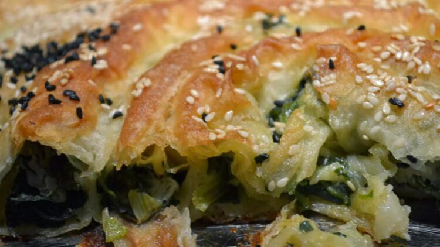

Ispanaklı Börek Tarifi

Malzemeler:
İç harcı için:
- 700gr ıspanak
- 2 su bardağı lor peyniri
- 1 tat lı kaşığı tuz
- 1 tatlı kaşığı pul biber
- 1 çay kaşığı kara biber
Sosu için:
- 1 su bardağı sıvı yağ
- 3 yemek kaşığı sirke
- 2 yemek kaşığı un
- 1 yemek kaşığı nişasta
Üzeri için:
Yapılışı:
- Öncelikle yıkayıp temizlediğimiz ıspanaklarımızı çok küçük olmayacak şekilde doğrayalım ve derin bir kap içerisine alalım.
- Üzerine lor peyniri, tuz, karabiber ve pul biberi ekleyerek karıştıralım.
- Ardından sosumuzu hazırlayalım. Bunun için derince bir kaba sıvı yağ, sirke, un ve nişastayı ekleyerek çırpalım.
- Yufkamızdan birini alarak tezgaha serelim ve üzerine sostan gezdirerek fırça ile her yerine gelecek şekilde sürelim.
- İç harcının birazını yufkanın üzerine alalım ve her yerine yayalım.
- Ardından yufkamızı ne çok sıkı ne de çok gevşek olacak şekilde rulo şeklinde saralım ve ikiye katlayarak pişirme kağıdı serdiğimiz fırın tepsisine yerleştirelim.
- Diğer yufkalarımızı da aynı şekilde hazırlayarak tepsiye alalım ve üzerine kalan sostan fırça ile sürelim.
- Böreklerimizi önceden ısıttığımız 190° fırında yaklaşık 45 dakika altı üstü güzelce kızarana kadar pişirelim.
- Pişen böreğimizi fırından alarak servis edelim. Afiyet olsun!